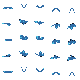

RE: FLORA / ACTUAL ART PIPELINE EXPERIMENT / 2026.09.06
直接生成序列帧，还是从同一只三维蝴蝶导出？
两条路线都做了真实试验。这里播放的每一格都来自实际图像或 Blender 渲染，不是示意图、CSS 蝴蝶或重新绘制的占位素材。
本次结论：A 的大图形象更饱满，B 的跨视角动画与导出流程更可控；两者都还不能直接替换现有素材。
A 两轮生成仍缺少真正透明，且相位/锚点不可靠。B 一键导出和格式验收通过，但 16px 时翼缘、身体过细，需要继续调美术。尺寸正确不等于艺术质量合格。
ROUTE A / BUILT-IN IMAGE GENERATION
内置直接生图
透明 / 动画约束未通过首次生成 + 一次针对性编辑；未抠图、未校正位置、未补帧。原始 1254×1254 RGB 大图，棋盘格已经烘焙进图像。
载入 A 的真实图片…
背景若透明，应透出紫色底。这里白灰棋盘仍在，证明它不是透明素材。
ROUTE B / SHARED BLENDER MODEL
同模型、多相机导出
复现 / 同相位 / 格式通过一只低面蝴蝶、共用左右翅动画、五台固定正交相机。128px 透明渲染，经固定像素化和调色板转换得到 16px 候选。
载入 B 的真实图片…
16px 正/背翼缘帧仅剩 8 个不透明像素；轮廓比当前手绘素材稀薄，并未通过最终美术验收。
固定 5 fps、1 秒循环；共用的是帧号，不能据此声称 A 的翼姿真的与 B 同相位。十字线只是格子中心参照，不会移动图片掩盖漂移。B 的连续三维预览在下方，最终 Sprite 仍是离散五帧。
B 的源头：真实三维模型，不只交最后一张 PNG
GLB 和转台都由同一个保存的 Blender 工程导出。模型没有外部图片纹理；四片翼膜、低面身体和两个镜像翅铰链可直接编辑。
拖动旋转 / 同一动画时间线
载入本地真实 GLB…
网页用交互透视视图；Sprite 用正交视图。两者共享实际模型和相位，但不应要求两种投影逐像素相同。
同一工程的真实 Blender 转台渲染
60 张真实渲染、15 fps、4 秒转一圈并拍翅 4 次。黑底有损视频只用来展示三维源，不参与 Sprite 生成。
从原始大图到最终图集
左侧保留 A 的失败证据；右侧保留 B 真正的 alpha。下面图集与上方尺度/版本选择联动。
A · 实际生成结果

16px 版只是整图最近邻压成 80×80，不是已经完成背景去除、调色板映射的游戏资产。
B · 同一动画、五个视角

每列固定同一时刻；每行仅改变相机。128px 原始 RGBA 有抗锯齿 alpha，16px 灰度候选才符合本次检查的运行时格式。
验收：可复现，与好看，是两道关
如果继续，我会优先迭代 B 的美术。
它已解决跨视角一致、动画相位和可重复导出。下一轮应调整翼面/相机仰角，提高16px轮廓，再人工修少量像素；不要扩大成复杂高模制作。
当前游戏素材，作为尺度基准

当前运行时实际只取物理行 1 和 3，再镜像/着色；这里五行全展示是为了比制作流程，没有改消费者。
A 的结论仅限本次“首次生成 + 一次编辑”，不是对所有未来生图能力的判断。B 的真实三维运动是简化正弦铰链，不是昆虫生物力学模拟。
来源、参数与复现入口
A · 原图与测量
内置 image_gen，未使用外部付费服务，不需要用户 API key。原始输出保留，不用后期修复反称生成器原生满足了约束。
B · 可编辑源与重放
/usr/bin/python3 blender/run.py
默认按配方重建并覆盖实验工程。保留手动编辑时用：
/usr/bin/python3 blender/run.py --export-existing
Blender 4.5.13 LTS 官方便携版，用户目录安装并通过官方 SHA-256 校验。全流程仅写本实验输出。